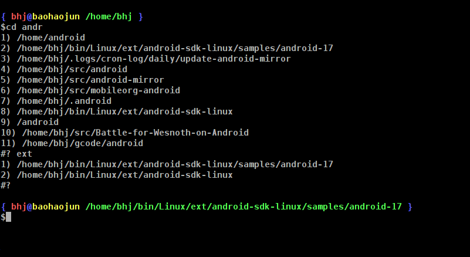

智能cd
这是一个智能的时代，手机已经智能了，cd怎么智能？
好吧，这里说的cd不是用来听的cd，而是UNIX改变当前工作目录的shell自带命令， change directory的缩写，cd。
哦，那个cd啊，你恍然，这东西还能智能？
UNIX的设计遵循了一条非常有道理的原则，那就是底层提供机制（mechanism）， 而非决策（policy）。决策要由上层决定如何使用底层的机制去实现。最早看到 这条原则是在LDD（Linux Device Driver）那本书里。
cd的机制就是 chdir 这条系统调用了，但作为shell里的一条命令，它自己应该
是可以定制的一种policy了。可惜在Bash里，我们看不到能怎么定制它。唯一提
供的一个定制是通过一个叫CDPATH的环境变量。设置了这个变量之后执行 cd
XDIR 命令，如果当前目录下没有 XDIR ，则Bash会依次到CDPATH里指定的每个
路径下寻找名为XDIR的子目录，如果找到就chdir到那个子目录下，如果所有
CDPATH路径下都找不到则最终报错。
强烈建议你不要使用这个变量!!!
因为我曾经吃过苦头，设置了这个变量之后发现Android的编译莫名其妙的失败了。 查了半天才发现原来是CDPATH引起的。你Google一下Android CDPATH应该发现别 人也碰到了这个问题，可惜你自己查出问题原因之前Google也帮不了你。 Android的Makefile里指定了Shell用Bash而不是默认的sh，然后Makefile里的 $(shell cd XDIR && ls …)类似这样的命令就都无法正常工作了。因为这里的 cd也会尊重你设的那个CDPATH变量！
正确的定制cd的办法是写一个 function cd() {...} 。在函数体里计算出你最
后真正要chdir过去的那个目标目录后，调用 builtin cd XDIR 过去。注意这
里必须用 builtin （另一个Bash自带命令）指定这回我们要用Bash自带的那个
cd而不是我们这里定义出来的cd函数，要不然你就递归了（恭喜你:-）。
然后因为你没有用过 export -f cd ，Make子进程和它唤起的$(shell cd
…)并不会看到这个cd函数，所以就不会存在CDPATH的那个问题。
基本上我自己定制过后的cd是这样工作的：
- 如果只带一个参数 X（谁说cd只 准 带一个参数？马上我就告诉你带多
个参数是什么意思），则：
a) 如果当前目录下有X并且是一个目录，则chdir到X。这保证了与builtin cd的兼容性。
b) 如果当前目录下有X并且是一个文件，则chdir到$(dirname X)。
c) 如果依次往上级目录寻找一直到根目录
/为止，能找到X（也就是在X前 加n个../后发现其存在），则依照a)或b)处理。d) 以上都失败，按2.处理
- 带多个参数或者带一个参数但在1.中尚未cd成功的情况。假设我们有X Y Z几
个参数，则到cd历史目录列表中（下面会解释）中匹配这些参数，匹配成功的
历史目录
$HISTDIR要求必须:a) X Y Z每一个都是其子串
b) X Y Z中至少有一个是其$(basename $HISTDIR)的子串。
- 然后如果只有一条匹配的历史目录，则直接chdir过去。
- 如果有多条匹配成功的历史目录，则调用一个my-select程序，让用户选哪 个才是他想要的。由于历史目录的记录方法，用户最近去过的目录会在前面 出现，如果是第一项的话，可以直接按回车。也可以继续输入一些单词U V W进行细化选择，但这个就是my-select的特性了，下次再聊它（有没有让你 想起Emacs下的Anything/Helm Mode?）。
- 如果一个也没有匹配，则报错。
最后，如果有chdir发生的话，把新的当前工作目录push到历史目录列表的头部。
见图（中间我输入ext作了一次细化）：

最后，我的cd其实是个alias，真正的函数名叫cdbhj，可以在 这个.bashrc 里 找到。